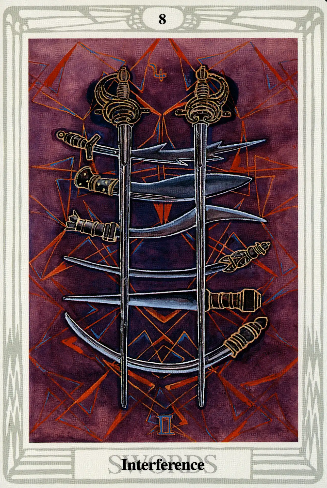

Swords
Eight of Swords
Interference

(Jupiter in Gemini)
0° to 10° Gemini
May 21 to May 31
Original Title: Lord of Shortened Force.
Golden Dawn Model: Four hands appear from clouds, each holding two swords, points upward; all
the points touch near the top of the card. Hands issue, two at each bottom angle of the card. The rose is reestablished in the center.
Prince Scale for Hod: Red-russet.
The Four Scales for Jupiter: Violet; Blue; rich Purple; Bright Blue, rayed Yellow.
The Four Scales for Gemini: Orange; Pale Mauve; New Yellow leather; Reddish Grey inclined to Mauve.
Formula: 8 (Hod) of Swords (Yetzirah) + Jupiter in Gemini = INTERFERENCE
Harris out did herself in strict adherence to the color scales in this card. One would not expect a marriage of these colors to appear in art prior to the psychedelic blacklight styles of the 1960s. The blades of the swords seem actually to glow in the dark. As in most of the small cards of this suit, the swords appear upon of field of stylized wings—here looking almost like pinwheels.
Actually, this card is not as bad as it looks or its title implies Jupiter in Gemini indicates an element of luck in intellectual pursuits. Hod is the sphere of Mercury, who rules Gemini. As it does to the eights of the other suits, however, Hod's imbalanced and lowly position on the Tree of Life throws a wet blanket on what otherwise might have been a fortunate coupling. There is not enough Mercurial energy left to put up much of a fight, and in the suit of Swords, fighting is what it is all about. Crowley says, “the Will is constantly thwarted by accidental interference.”
The Eight of Swords does not show us much patience or persistence. If its influence is to be overcome, those qualities will need to be developed and introduced into the equation. Otherwise, everything will most definitely serve to interfere. See chapter 20 for the general divinatory meanings of this card.